☦ Back to Menu

Books on Orthodox Christianity
Introduction to Rene Guenon's critique on the Modern Thinking
Disclaimer: Guenon is not an Orthodox author, but many of the authors listed below were
inspired by his work. To better understand their writings, it is recommended to read these books as well.
- Introduction to the Study of the Hindu Doctrines [René Guénon]
- The Crisis of the Modern World [René Guénon]
- The Reign of Quantity & the Signs of the Times [René Guénon]
Introduction to Orthodox Christianity
- The Orthodox Study Bible
- The Sayings of the Desert Fathers
- Fr. Seraphim Rose
- The Way of the Pilgrim
- The Orthodox Way [Kallistos Ware]
- The Orthodox Understanding of Salvation [Christopher Veniamin]
God's Revelation to the Human Heart
- The Mystical Theology of the Eastern Church [Vladimir Lossky]
- Art of Prayer: An Orthodox Anthology
- Orthodox Spirituality [Dumitru Stăniloae]
- On the Acquisition of the Holy Spirit [St. Seraphim of Sarov]
- Man and the God-Man [St. Justin Popovich]
- The Mystical Theology of the Eastern Church [Vladimir Lossky]
Protestant and Catholic Background
- Rock and Sand [Fr. Josiah Trenham]
- The Papacy [Abbé Guettée]
About Schizo/New Age/Occult Topics
- The Soul After Death [Fr. Seraphim Rose]
- Trampling Down Death by Death [Father Spyridon Bailey]
- Human Image: World Image [Philip Sherrard]
- The Rape of Man and Nature [Philip Sherrard]
- The Sacred in Life and Art [Philip Sherrard]
- Orthodoxy and the Religion of the Future [Fr. Seraphim Rose]
- Orthodoxy and the Kingdom of Satan [Father Spyridon Bailey]
- The Gurus, the Young Man, and Elder Paisios [Dionysios Farasiotis]
Links to More Resources
☦ Back to Menu